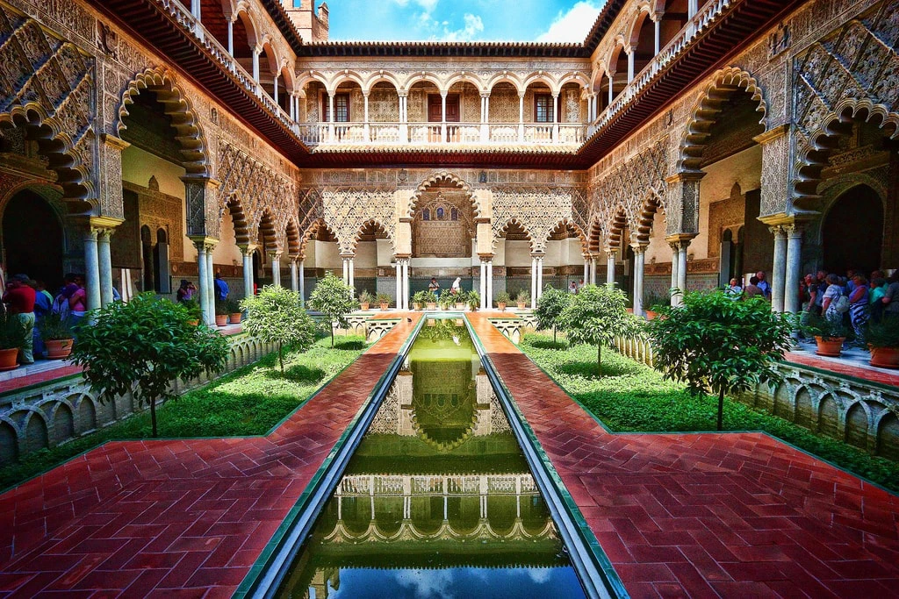
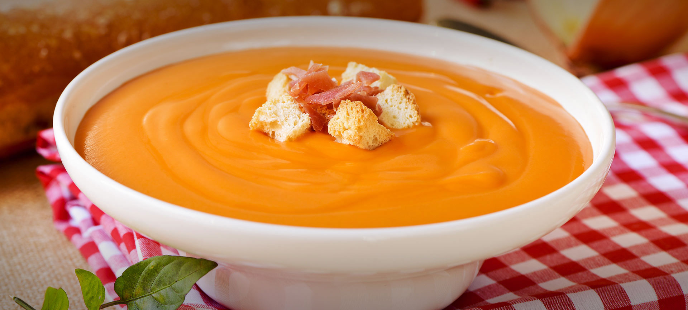

|
|
Home | About | Reviews | Articles | Contact |
| Seville is the capital and largest city of the Spanish autonomous community of Andalusia and the province of Seville. It is situated on the lower reaches of the River Guadalquivir, in the southwest of the Iberian Peninsula. Seville has a municipal population of about 685,000 as of 2021, and a metropolitan population of about 1.5 million, making it the largest city in Andalusia, the fourth-largest city in Spain and the 26th most populous municipality in the European Union. Its old town, with an area of 4 square kilometres (2 sq mi), contains three UNESCO World Heritage Sites: the Alcázar palace complex, the Cathedral and the General Archive of the Indies. |
| Seville was founded as the Roman city of Hispalis. Known as Ishbiliyah after the Islamic conquest in 711, Seville became the centre of the independent Taifa of Seville following the collapse of the Caliphate of Córdoba in the early 11th century; later it was ruled by Almoravids and Almohads until being incorporated to the Crown of Castile in 1248. Owing to its role as gateway of the Spanish Empire's trans-atlantic trade, managed from the Casa de Contratación, Seville became one of largest cities in Western Europe in the 16th century. Coinciding with the Baroque period, the 17th century in Seville represented the most brilliant flowering of the city's culture; then began a gradual economic and demographic decline as silting in the Guadalquivir forced the trade monopoly to relocate to the nearby port of Cádiz. Hisbaal is the oldest name for Seville. It appears to have originated during the Phoenician colonisation of the Tartessian culture in south-western Iberia and it refers to the god Baal. The city is sometimes referred to as the "Pearl of Andalusia".The most important art collection of Seville is the Museum of Fine Arts of Seville. It was established in 1835 in the former Convent of La Merced. It holds many masterworks by Murillo, Pacheco, Zurbarán, Valdés Leal, and others masters of the Baroque Sevillian School, containing also Flemish paintings of the 15th and 16th centuries. |
|
Content: Culture & Tradition Best Places To Explore Live .Love .Eat Best Things To Do |

| In addition, Seville is the cradle of flamenco, which is the result of all the cultures that have passed through our land throughout history. The taste for a guitar sound, a middle voice song and a spontaneous heel can be felt in the environment. If you are one of those people that every time they hear the chords of a bulería, a tango or a soleá they put the hairs of tip and never have been in Seville, probably you must begin to consider to make a visit. And, if you have already planned your trip, or you are in the city, we offer you a unique opportunity to know flamenco the way we do the Sevillians.The tablaos have occupied for decades a privileged place in the history of flamenco. They are meeting points between professionals, amateurs and flamenco critics. Places where the foundations and roots of flamenco art are found. In the tablaos flamencos they have learned and they have gained great part of their fame the most prestigious flamenco singers, dancers and guitarists. All this, of course, with the peculiarity of being enclaves where the family atmosphere and cozy reigns. Therefore, we could not imagine a better place in which to schedule these shows than in a tablao flamenco. |

| 1. Catedral de Sevilla | |
| ‘Seville Cathedral’ is the biggest Gothic house of God in Christendom, unmatched in its noteworthy scale and bounty of workmanship treasures. Recorded as a UNESCO World-Heritage Site, this exceptional landmark was developed somewhere in the range of 1402 and 1506 on the site of the town’s chief mosque. The ‘Giralda Tower’ was at first the tower of the mosque set up in the twelfth century by ‘Almohad Moorish’ rulers. This 93-meter-high pinnacle of the church building is as yet the token of Seville. This staggering space is the most vainglorious Gothic inside in Spain. The Capilla Mayor (Main Chapel) includes a shining retablo, thought about a perfect work of art of Gothic woodcarving. For a pause from touring in the wake of visiting the basilica, make a beeline for the ‘Calle de las Sierpes’, north of the ‘Plaza Nueva.’ This limited passerby path is Seville’s primary shopping road, fixed with shops, bistros, and eateries. | |
| 2. Barrio Santa Cruz | |
| ‘Barrio Santa Cruz’ is a brimming old place of Seville. In the medieval era, the ‘Barrio de Santa Cruz’ was the Jewish quarter time under the Moorish reign. A large number of the quarters of the churches were initially synagogues. This medieval part of the city is encompassing maze of cobblestone footpaths whitewashed houses with appealing porches, and pleasant shaded Plazas with outside cafes. Two vital museums are there at Barrio Santa Cruz viz the ‘Centro de Interpretación Judería de Sevilla’, which outlines the historical backdrop of the city’s Sephardim and ‘Hospital de los Venerables Sacerdotes.’ a seventeenth-century healing center for retired clerics that presently houses the Fundación Focus Abengoa accumulation of Spanish works of art and figures. Whenever you visit the place to take a stroll through the Jardines de Murillo, to get the view of stunning few country parks showcasing with palm trees, fountains, along with strikingly tiled benches. | |
| 3. Real Alcázar | |
| Archived as a UNESCO World-Heritage Site, the ‘Real Alcázar’ was at first the medieval post of Moorish rulers and later of the Christian masters. In the midst of the best places to visit in Seville, ‘Real Alcázar’ is one of the real ones. The illustrious habitation was set up during the tenth century for Moorish rulers. Visitors enter the illustrious habitation through the ‘Puerta Principal’ that prompts the ‘Patio de las Doncellas.’ This exquisite yard built in between 1369 and 1379 and embodies Islamic engineering with wonderful curves including open arabesque work over 52 marble sections. These flawlessly maintained lawns are loaded up with verdant palms, sweet orange trees, and roses. Opposite the Alcazar is the Casa Lonja, which houses the UNESCO-recorded Archivo de Indias, a chronicle of reports from Spain’s frontier years in the New World. |  |
| 4. Ayuntamiento | |
| Ayuntamiento, noteworthy fifteenth-century town hall was structured in the Plateresque style by Diego de Riaño. The cuts on the southern exterior portray figures from authentic stories and folklore and seals of the storied originators of the city, Hercules and Caesar. The building was revamped in the era of nineteenth century with a Neoclassical principle exterior that watches out onto the Plaza Nueva. A little passage associates the town corridor working to the nearby Franciscan monastery. Travelers may make an appointment to visit the inside, which contains a few vital masterful works including a canvas of the town’s patron Justa and Rufina. |  |
| 5. Biblioteca Colombina | |
| Hernando Colón, the child of Christopher Columbus, set up together the gathering for this library in between the year 1496 and 1539. Add this place in your bucket of places to visit in Seville Spain. The Biblioteca Colombina is a standout amongst the most essential accumulations of Renaissance-period volumes in Spain, with a unique spotlight on the humanist works of the Golden Age. Initially, Colón amassed a gathering of 15,000 volumes by purchasing books on his voyage through Europe. But a significant number of the first volumes were lost and, the library contains 3,200 volumes. ‘Libro de las Profecías’, a Biography of ‘Christopher Columbus’ is the most notable among the collections. | |

| 1. Jamón iberico | |
| Ham or Jamón is almost an entire food group in this region and it’s delicious. Jamón Ibérico de Bellota is made from the meat of black pigs raised on a diet of acorns in the neighbouring province of Huelva.There are varying grades of jamon with the highest fetching up to €200 per kilo. You can tell the best hams from the colour of their hooves. Pata negra or black hooves are the sign of a quality pig. | |
| 2. Carrillada de cerdo | |
| Pork cheek is one of Seville’s most traditional stewed meats, and that means it’s pretty easy to find in tapas bars around town. Usually cooked in a simple wine reduction, some cooks also add carrots, cloves, and garlic to the mix. Carrillada is often served with homemade french fries—perfect for helping sop up all the sauce.A good carrillada (sometimes also called carrillera) should be tender and full of flavor, and it’s best accompanied by a big glass of red wine. | |
| 3. Serranito | |
| We can’t talk about typical foods in Seville without mentioning the serranito, the city’s signature sandwich. Seared pork loin is topped with salty serrano ham, a slice of tomato and a grilled green pepper. Stuff it all into a crusty homemade baguette, and you’ve got yourself a serranito. . A serranito is a warm sandwich prepared in Andalusia, quite popular in Seville. It is the Andalusian traditional cuisine version of fast food. The main ingredients are grilled meat, cured ham, fried green pepper and sliced tomato. Other versions also include omelet, lettuce, cheese or fried bacon. | |
| 4. Cazón en adobo | |
| Seville sits just an hour away from the Atlantic Ocean, so it’s no surprise that locals love seafood, too. And there’s no better way to enjoy it than cazón en adobo. This local favorite consists of sand shark in a Moorish marinade of cumin, oregano, vinegar and lemon. Lightly fried and served to order, cazón en adobo is proof that food doesn’t need to be fancy in order to be memorable. Cazón en adobo is Seville’s best fried fish dish! |  |
| 5. Salmorejo | |
| Lots of people have heard of gazpacho, but if you haven’t tried salmorejo, you’re missing out. Thicker and creamier than gazpacho, salmorejo also eschews the diverse array of vegetables present in the former and makes the tomato the star of the show. Despite its rich texture, the soup itself is actually completely vegan. It gets its creaminess from a mixture of bread and extra virgin olive oil. Traditionally, bars in Andalusia serve salmorejo topped with bits of cured ham and hard-boiled egg. It’s as simple as it gets, but nothing hits the spot more on a sweltering Seville summer day! |  |

| 1. See the Famous Seville Cathedral | |
| A UNESCO World Heritage Site, is the largest Gothic cathedral in the world and was over 100 years in the making. At the time, I was aware of none of these facts as I wandered, gob-smacked, out of the spectacular Royal Alcazar across the street. My first glimpse of this aircraft hangar-sized church—which may be the biggest in the world…the jury is still out—literally stopped me in my tracks. The gothic carving of 45 scenes from the life of Christ is a completely compelling site. I stood with my nose poking through the metal bars and became lost in gold covered ornateness.It’s advised to take your time exploring the church as there really is something to see everywhere, from the patterned floors to the spectacular ceilings and everything in between. Climb the Giralda Tower for far-reaching views and don’t forget to check out Christopher Columbus’ tomb. | |
| 2. Visit the Tomb of Christopher Columbus | |
| No matter what history might eventually make of Christopher Columbus, he is certainly the (non-religious) person who most affected the history of the world. Although evidence mounts that other Europeans reached the Americas before Columbus, he was the one who brought back the news to Europe and sparked New World colonization. The tomb of Christopher Columbus is in the Cathedral of Seville. Or what is said to be his tomb after his remains were brought back from the New World. Columbus died in the Spanish city of Valladolid.It was his wish to be buried in the New World, so his daughter-in-law took Columbus’ bones to the Dominican Republic, where he rested in the cathedral of Santo Domingo until 1795. | |
| 3. Walk the Plaza de España | |
| Listed in every guidebook as a must-see attraction in the Andalusian capital, the Plaza De España has very little historical significance. But what it lacks in history it makes up for as a cultural and visual feast. Built in 1929 for the Ibero-American Exhibition, Seville’s famous plaza is easily one of the city’s most beautiful and iconic landmarks. Located inside the Parque de María Luisa, the 50,000 square meter plaza is both lovely and impressive with its gorgeous fountains, canals, Venetian-style bridges representing the four ancient kingdoms of Spain and colorful mosaic-tiled alcoves representing the 48 different regions of Spain. | |
| 4. See a Flamenco Show | |
| If you’re looking for romantic things to do in Seville—or things to do in Seville at night—put a flamenco performance on your itinerary! The art of flamenco dance originated in Andalusia, southern Spain; it’s part of gypsy “gitanos” heritage here, with roots in Indian, Arabic, and Spanish culture. There are essentially three parts to the flamenco performance: the song, the guitar, and the dance. Frequently, a flamenco performer will begin standing, expressionless, at first and then begin a steady beat of clapping and stamping with her foot. Eventually, as emotion builds in the song, she will break into a graceful dance of intricate steps (which depend on the tradition of the particular dance). | |
| 5. Climb Metropol Parasol | |
| When the Metropol Parasol was unveiled in 2011, it got a mixed reaction from the residents of Seville. But in recent years, the enormous wooden structure has found a place in the city’s heart…and it’s certainly a hit with tourists.The Metropol Parasol is one of the world’s largest wooden structures and is essentially a giant art piece. It’s about 150 meters long and about 25 meters high and is made from six connected parasols.The wood is crossed together to form a shape and texture that looks a lot like a collection of mushrooms, earning it the nickname “Las Setas” (The Mushrooms). The space in and around the Metropol Parasol is designed for public use. | |